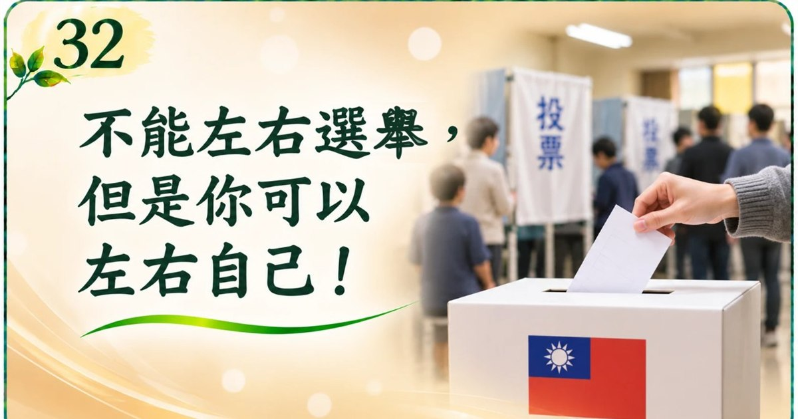

不能左右選舉，但是你可以左右自己！
政治，乃眾人之事，總統、市長選舉結果更是直接或間接方方面面影響著整個社會，所以會有許多的人在意選舉結果。
如果你的情緒因為選舉結果反應很大，有兩種可能。第一、生活很實際的受到影響，例如你服務的政黨沒有選上，失業了。第二、你將希望放在無法掌控的事物上！
每個人都有完全的自由期待各種願望的發生：健健康康活到最後一口氣、小孩聽話上進、在台北市有房子、找到深愛自己的白馬王子、白雪公主，顏值高、收入高，自己欣賞的候選人當總統、市長！
林林總總的願望中，有的在你可掌控範圍內，例如一個月要存多少錢？有的你完全無法掌控，例如孩子將來的前途。可以透過你自己的付出而成就的確定性不太一樣，也就是結果的和掌握度不一樣！
理性的人對於可掌控性低的期待知道不能有太重的得失心，例如總統、市長大選的結果！但如果是選里長，有可能該里大部分都是多年的老鄰居，可以透過運作來決定誰當選，這個目標有機會透過努力來達成，就算得失心重，失落的機會比較小！
或許你沒有那麼重視政治，但如果你對於可掌控性低的目標卻放了理所當然的期待，可能常常會感到不安、挫折、生氣！
很多的父母以為在孩子的食、衣、住、行、育、樂、學習都提供最好的資源，孩子就會身體健康、聽話、聰明、有美好的未來。孩子漸長後，發現其個人意志很難被掌控！特別到青春期，孩子叛逆，家長受傷，只希望孩子明白父母的愛，尊重父母、不要變壞！
很多人面對另一半，常常以為只要自己真心付出就可以得到相對回報。實際生活中，卻常見對婚姻極度失望的人！
現實感高的人，比較不會被真實的人生打擊的太重。自己兒子3歲的時候在公園玩，總有熱心的媽媽會過來一開始表示兒子很活潑，然後支支吾吾的說你有沒有覺得他…，就是…，最後終於說出重點：是不是應該去看醫生鑑定過動症？前面的支支吾吾大概怕傷了我的心不敢直接講！我常常淡定微笑地回答：這麼明顯還看不出來嗎？還需要醫生告訴我他是過動嗎？然後對方就會鬆了一口氣的說：對啊！我就覺得他很像猴子，動個不停！很多剛剛不好意思講的形容詞噼哩啪啦一次講完！
我可以不難過的原因在於坦然接受無法控制的天生過動！我能做什麼？難不成把兒子大腦給換掉？但當不糾結為什麼孩子是過動，我就有把更多精力放在建造我們母子關係的快樂以及孩子的能力！
誰當總統、市長對我們的國家會更好，每個人當然都有自己的想法，但這件事真的不是一個人可以掌控的！最好的心態就是盡人事，聽天命！
在希望國家更好的大前提下，可以掌控的是你自己這一票要投給誰、不管選舉結果如何，你可以發揮怎麼樣的影響力讓身邊的人都成為國家更穩定發展的一分子！至少可以不要製造分裂，散播絕望的氛圍！
當你將目標放在自己可以掌控的範圍內，容易有成就感、開心的心情，還能行有餘力幫助別人！
更能坦然接受不如意，比較不會被憂鬱情緒風暴席捲跟打敗，除了歲月的歷練，還有在聖經中學到的信靠。詩篇138 ：8耶和華必成全關乎我的事。耶和華啊，你的慈愛永遠長存，求你不要離棄你手所造的。
我相信有一位上帝可以讓我呼求：不要離棄我和我的世界，因著他的慈愛，必成全關乎我的事，相信上帝允許的不會超過我的能力所能承受。
多年的經驗常常經歷上帝用我想像不到的方式在照顧我，以至於雖然意外不斷發生，心境可以不受環境的影響，活在相信恩惠慈愛會隨著我的安全感中！
就在寫這篇文章的時候又來了一個打擊！兩個禮拜前孩子一副兩萬多的角膜塑形片，被兒子弄丟了一片，所以重配。這是一筆意外、負擔稍重的支出，今天剛拿到，沒想到孩子睡前戴上後，從餐桌走到沙發幾步路中，其中一片憑空消失！
除了經濟的損失，今天為了拿鏡片，順便回台大醫院檢查孩子眼睛視神經頭凹陷，從總院兩個檢查室到兒童醫院，在醫院停留了五個多小時已經身心俱疲。因爲還需要到外面辦事讓孩子自己先回家，所以晚上九點打電話回家才知道，從他的低落、害怕，不難想像他的挫敗以及在他旁邊非常節省的先生的衝擊！
感謝上帝，透過生命中數不清的挫敗苦難和養成的耐受力，讓我馬上警覺，刻意放慢語速，溫柔地跟孩子說：我知道你很難過鏡片不見，因為你是一直想幫家裡省錢的孩子，不用太難過，你比鏡片更重要。這件事情不難解決，回去媽媽也幫忙找，或許我們可以找到，如果找不到再配一副，爸爸媽媽也是有錢的。但明天要考試了，你安安心心地去睡覺，保持最好的體力去考試，說不定你又可以像之前一樣拿獎學金就可以幫忙家裡付這個錢了，雖然有損失，提醒我們要練習更小心。也要練習不因爲錯誤而繼續影響我們原來有的生活跟表現。先去睡覺，媽媽愛你，下次發生難過的事情可以更快打電話跟媽媽講，就不用自己擔心難過了。很快我就回家陪你囉！
一邊跟兒子講話的時候，一邊收起本來要繼續在外面奮鬥的報告，趕緊把媽媽的愛帶到兒子身邊。
其實過動的孩子，因爲粗心大意這一生會弄丟、弄壞很多很多很多的東西，為什麼我這麼肯定呢？因為兒子的過動是遺傳我。師範學院九天畢業旅行，擔任團長的我竟然在每一天住宿的旅館都遺落一樣以上的東西，最後我沒有跟著遊覽車回學校，中途下車回家之後才發現我的行李跟著遊覽車一起回學校了。所以我撥著著司機大哥在當時非常昂貴話費的大哥大行動電話聯絡，請同學協助將行李放到我的寢室，沒想到班上同學不顧我需要不斷投錢的電話費，不准我掛斷，硬要唱一首歌給我聽：你是一隻可愛的小烏龍，一天到晚掉東西！
在一生中不斷因為掉東西而很長時間活在自責，自我形象低落、羞愧感中成長，從堅定認爲自己就是一個成事不足，敗事有餘的麻煩製造者 ，經歷很久很久的心理重建，才漸漸轉變總是悲觀充滿陰霾的心情，到現在坦然接納自己的限制，回復生命本質的開朗，看見自己是一個認真可愛充滿熱誠的雪媚！
過動可不是只有容易掉東西，衝動、不專心等特質讓孩子與很多老師都不對盤，在學校常不達標，父母常血壓飆高，親子許多衝突緊張，道歉修復關係再衝突、再修復。國一剛開學兩個月就跟同學打架，但已練就淡定以對，積極教育，並沒有影響親子關係、同儕關係、家長關係。
只希望孩子國中平安度過的我無法知道過動在未來還會帶來什麼衝擊，只知道肯定會有！！但是很清晰的目標：孩子、學校都無法掌控，但我可以決定自己要向左還是向右、一端是坦然接受現實，努力自己可以做的部分，一端是糾結、擔憂、害怕、生氣。
年輕時，有一首歌叫：守著陽光守著你！不管誰當總統、市長、不管立法院長是誰、不管孩子能力如何、不管他的成長出現什麼狀況，我都決定，守著陽光一樣的溫暖、盼望和愛來守護孩子，弄丟鏡片還能接受，孩子的快樂、自信、被愛的安全感可不能弄丟了！
親愛的朋友，邀請你一起加入左右自己行列：背對受困無法掌控的無力感、陰霾，面向可以自主的成就感，堅持向著光的方向。
《心路新路專欄文章介紹》
每個人都有一個想要達到的目標、地方，並為此努力著。但是，走著走著，有時會感到對前方感到迷惘、困惑、疲累，甚至發現自己不見了！此時，需要重新找到『心路』：與自己內心連結之路。重新好好認識自己，除了自己在想什麼、如何感受這個世界以外，更重要的，找回自己受造之初、與生俱來的本質及祝福。當人可以找到自己原來的樣子，一條嶄新的、喜樂的、有盼望的、有力量的、回到上帝創造心意的『新路』，也即將開啟。
歡迎到作者邱雪媚的FB進行交流。